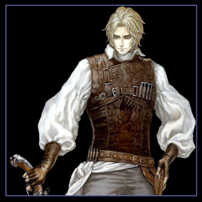
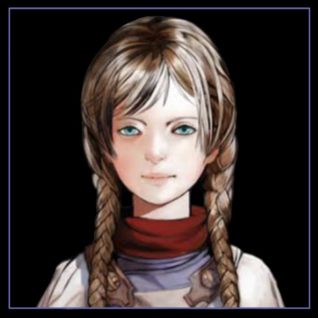

Lista de personagens que aparecem na franquia Castlevania. De A a C
Abram é um personagem em Castlevania: Order of Ecclesia. Ele é um das aldeões de Wygol e um distante descendente do Clã Belmont. Ele é um ex-ladrão bom no manuseio de remédios, poções e tónicos.
Abram era um bandido que encontrou salvação na cidade de Wygol e começou a trabalhar com remédios nela.
Actrise (魔女アクトリーセ, Majo Akutorīse, em inglês: Witch Actrise, em português: Bruxa Actrise) é uma grande antagonista em Castlevania 64 e Castlevania: Legacy of Darkness. Ela é uma bruxa que (ao lado de outras) busca a ressurreição de seu mestre, o Conde Drácula.

Actrise é uma mulher cuja ambição reside no poder e na beleza (dela própria, naturalmente). Em uma tentativa de cumprir seus desejos ganhando a imortalidade, Actrise se comprometeu a servir ao Drácula matando 100 crianças... entre as quais estava seu próprio filho. Ela se tornou um dos tenentes do Drácula junto com a Morte e Gilles de Rais, e juntos os três buscaram a ressurreição de seu Lorde das Trevas. Em algum momento durante este tempo, ela ao lado de Rais também começou a vampirizar J. A. Oldrey, forçando assim sua família, Mary e Henry, a cortar os laços com ele.
Durante a infiltração de Cornell no castelo escuro, Actrise apareceu apenas uma vez para provocar o homem-fera depois que este derrotou Gilles de Rais em um breve duelo, e também sugeriu ao lado de seu aliado que Cornell com suas habilidades de homem-fera seria um oponente digno para Drácula em relação ao objetivos deste último. Ela apareceu novamente somente depois que Drácula foi derrotado por Cornell. Ela estava presente na sala do trono enquanto a Morte sacrificava a forma de lobo de Cornell no ritual para reviver seu Lorde das Trevas.
Depois que Drácula renasceu como uma criança, os três tenentes conceberam um plano para impedir os dois caçadores de vampiros que tinham vindo para investigar os acontecimentos sombrios ao redor do castelo. A fim de deter os caçadores, Morte e Actrise começaram a distrair e impedir seu progresso pelo castelo, enquanto Gilles assumiu o papel de Drácula. Como colega praticante de magia, Actrise perseguiu Carrie. Ela ofereceria à garota a oportunidade de se juntar a ela, o que foi naturalmente recusado. Em um esforço posterior para quebrar o espírito da garota, Actrise fez Carrie lutar contra outro guerreiro Fernandez que havia sido transformado em vampiro.
Depois que Carrie escalou a Torre da Feitiçaria e alcançou o topo da Sala dos Relógios, Actrise confrontou Carrie uma última vez. Ela compartilhou sua história com a garota de como ela se tornou uma feiticeira malvada a serviço das trevas. A própria Actrise não demonstrou remorso por suas ações, mas Carrie sentiu apenas pena da mulher "patética", o que enfureceu Actrise, também expressando irritação por a aparência de Carrie a lembrar de seu próprio filho antes de morrer. Proclamando amar ninguém além de si mesma, Actrise mudou-se para o centro da torre e desafiou a própria Carrie, jurando arrancar o coração da garota e apresentá-lo ao Drácula.
Em uma última tentativa de impedir Carrie de chegar à sala do trono de Drácula, ela se envolveu com a garota em uma batalha de magia. Ela usou sua magia negra para convocar fragmentos de cristal em uma tentativa de empalar seu oponente. A vaidade e a confiança excessiva de Actrise em seu próprio poder seriam, infelizmente, sua ruína. A bruxa provou não ser páreo para um descendente do Clã Belnades e morreu nas mãos de Carrie. Enquanto morria, ela só podia expressar descrença de que ela poderia até mesmo ser derrotada em batalha, por fim sendo selada dentro de um de seus próprios cristais mágicos e então se estilhaçando com ela ainda dentro (embora não antes de revelar um pouco de sua verdadeira aparência física). Actrise morreu sem nunca perceber que era pouco mais do que um peão dispensável para os esquemas de Drácula.
Aeon é um personagem em Castlevania: Order of Ecclesia. Ele é um dos aldeões de Wygol e um distante descendente do Clã Belmont. Ele é o cozinheiro chef local da cidade.
Aeon pode cozinhar qualquer coisa ... ou assim ele diz. Ele afirma que ele é o melhor chef do mundo, mas ele está sempre encontrando falhas em sua culinária. Ao realizar suas missões, ele perceberá todo o seu potencial e adicionará itens alimentares à loja.
Albus é um agente desonesto de Ecclesia que possui a arma mágica Agartha e, eventualmente, o glifo poderoso Dominus, que é dito ter o poder de derrotar Dracula. Em Castlevania: Order of Ecclesia, o fundador da Ecclesia, Barlowe, envia Shanoa em uma missão para encontrá-lo e recuperar o glifo
É o pesquisador chefe da Ecclesia e, como Shanoa, foi treinado desde uma idade jovem para dominar Dominus. Dedicado à pesquisa, ele se tornou o assistente de confiança de Barlowe. Usando Agartha, uma arma de fogo encantada, Albus é capaz de canalizar a energia do glifo para as balas, que se tornam projéteis.
Albus é encontrado por Shanoa e ele desiste de 2 peças de Dominus. Albus rouba a última parte de Dominus, Dominus Agony, depois de testar e analisar as reações de Shanoa aos outros dois glifos e procura recuperá-los. Mas porque Dominus tira seu poder de Drácula, Albus quase sucumbe à vontade de Dracula e faz um retiro para o Solar do Mistério, onde ocorre um confronto final entre ele e Shanoa quando ele cai sob a influência de Dracula. Para receber o mau final, ele deve ser morto sem resgatar todos os 13 aldeões. Para continuar, você deve resgatar todos os aldeões e depois lutar com Albus. Quando Albus é morto, Shanoa absorve o glifo de Dominus, e o espírito de Albus diz a Shanoa que nunca mais o use. Depois de completar o jogo, Albus é desbloqueado como um personagem jogável.
Albus se refere a si mesmo como o irmão de Shanoa e, sabendo o destino que aguarda o portador de Dominus, roubou o glifo para que pudesse aprender a usá-lo ele mesmo. Ele espera não só superar sua fraqueza, mas também proteger Shanoa do próprio Dominus, no fundo, ele se importa muito com ela, até conspirando para dar vida a Shanoa.
Alexis é o melhor amigo do caçador de vampiros Cyril no drama de áudio Castlevania: Nocturne of Recollection, que ocorre um ano depois de Castlevania: Symphony of the Night.
Não existem muitas informações sobre este personagem.
Adrian Fahrenheit Tepes (アドリアン・ファーレンハイツ・ツェペシュ, Adorian Fārenhaitsu Tsepeshu) é melhor conhecido como Alucard (アルカード, Arukādo) e nos anos 2030 como Genya Arikado (有角幻也), é o filho Dampiro do Conde Drácula. Apesar de ter estreado em Castlevania III: Dracula's Curse como personagem coadjuvante, Alucard foi reintroduzido como o principal protagonista de Castlevania: Symphony of the Night, sua aparição mais conhecida.
Como filho de um vínculo não natural entre Drácula e uma mulher humana chamada Lisa, Adrian tinha poderes especiais e estava destinado a ser mais forte do que qualquer humano, mas não potencialmente tão forte quanto seu pai. Depois que Lisa foi morta, tendo sido confundida com uma bruxa, Adrian cresceu sob a influência de seu pai, de onde ele foi ensinado nas artes das trevas e moldado em um guerreiro que um dia lutaria pelo lado do mal.
A existência de Adrian não veio sem peculiaridades, já que o lado gentil e humano de sua mãe sempre pareceu nublar seu "melhor julgamento", como Drácula teria colocado. Quando ela morreu, Adrian estava ao lado de sua mãe. Ela insistiu que ele não descontasse nos humanos sua raiva por sua morte, já que suas vidas já estavam cheias de dificuldades. Com essas palavras, ela teve uma influência profunda no pensamento de Adrian. Sua mente vagou enquanto ele questionava a vontade de seu pai. Depois de aguardar o máximo que pôde, ele se separou do exército de seu pai e desapareceu. Entendendo que Drácula iria impor sua ira ao povo, Adrian voltaria seus esforços para destruir o exército de seu pai, esperançosamente encorajando-o a reconsiderar. Além disso, ele escolheu usar o nome de "Alucard" (o nome de Drácula ao contrário) para representar que ele defendia crenças opostas às de seu pai.
Alucard é um espadachim experiente e normalmente empunha espadas de uma mão. Os outros ataques de Alucard usam magia negra. Como um metamorfo, Alucard pode se transformar em um morcego, um lobo ou até mesmo névoa.

O Ancião é um personagem da série animada Castlevania. É o chefe dos palestrantes e o avô de Sypha Belnades. Ele foi salvo por Trevor de dois sacerdotes que tentaram matá-lo, e por agradecimento, o recebeu na cabana dos oradores. Ele pediu a Trevor que salvasse seu neto que em troca, pediu aos oradores para sair da cidade antes que os agentes da Igreja viessem atrás deles. Ele foi visto pela última vez com segurança escondido nas catacumbas abaixo de Gresit.
Angela (アンジェラ, Anjyera) é uma personagem coadjuvante na série spin-off de Pachislot Akumajō Dracula. Ela é enviada pela igreja algum tempo depois para ajudar Trevor Belmont em 1479. Usando runas encantadas que aparecem em seu corpo enquanto ela dança, ela é capaz de usar uma variedade de habilidades mágicas na batalha.
Após a ressurreição de Drácula em algum momento após a Maldição das Trevas, Angela se junta a Trevor e fornece a ele um suporte mágico. Ela usa seu poder para aumentar a força de Trevor e permitir que ele aniquile uma horda de esqueletos. Ela também revive Trevor com magia de cura durante sua luta com Drácula. Seu envolvimento vira a maré da batalha e permite que Trevor sele Drácula novamente.
Fora do combate, Angela participa de várias sequências de dança que invocam runas especiais. A aparência dessas cenas depende da pontuação do jogador e permite que Trevor progrida no jogo. Essas seqüências devem ser concluídas para derrotar com sucesso Dracula.
No jogo subseqüente, Drácula é ressuscitado novamente. Para impedir que Angela interfira mais em seus planos, Drácula a força a usar um colar amaldiçoado e lhe servir como guarda-costas. Neste estado de lavagem cerebral, o cabelo de Angela muda para uma cor prateada e se torna queimado, seus olhos ficam vermelhos e runas escuras aparecem permanentemente em seus braços. Sob a influência de Drácula, ela se mostra uma lutadora corpo a corpo excepcionalmente rápida e acrobática, e usa as lâminas de pulso retráteis como suas principais armas. Ela também aparece em sua forma original em flashbacks durante o jogo.
Trevor luta com Dark Angela quando ele chega na sala do trono de Dracula. Ele temporariamente a convence a tomar o controle de si mesma, mas o poder do colar rapidamente a possui novamente. Trevor finalmente consegue destruir o colar, terminando a lavagem cerebral e restaurando a humanidade de Angela quando ela perde a consciência. Sua cor dos olhos e estilo de cabelo voltam ao normal neste momento, mas seu cabelo mantém sua cor prata alterada.
Após a derrota de Angela, Trevor coloca seu corpo inconsciente no chão e segue em frente para enfrentar Drácula. Quando Drácula parece ter a vantagem na batalha, Angela parece a Trevor em sua forma original de dançarina como uma memória ou um espírito. Isso reagrupa Trevor na luta e permite que ele derrote Drácula. O destino real de Angela é atualmente desconhecido.
Angela também aparece em seqüências de dança, como ela fez no jogo anterior. Apesar de sua lealdade a Drácula pela maior parte da história, Angela alterna entre seus dois alter-egos. Como no primeiro título pachislot, Angela deve fornecer ao jogador uma série específica de runas para completar o jogo.
Anna é uma personagem em Castlevania: Order of Ecclesia. Ela é uma das aldeãs de Wygol e uma distante descendente do Clã Belmont. Ela é filha de Irina e irmã de Serge.
Ela é uma garota sensível e dotada de uma consciência do mundo etéreo. Anna tem uma tendência a ser possuída por espíritos malignos, então seu gato, Tom, está sempre lá para mantê-los afastados. Ironicamente, todas as buscas de Shanoa envolvem ajudar Tom de uma forma ou de outra.
Annette (アネット, Anetto) é um personagem coadjuvante da série Castlevania. Ela é a noiva de Richter Belmont. Ela fez sua estreia em 1993 no jogo Castlevania: Rondo of Blood, reprisando seu papel em alguns outros jogos como Castlevania: Dracula X, Castlevania: The Dracula X Chronicles e CR Pachinko Akumajō Dracula.
Depois de ser ressuscitado pelo sacerdote sombrio Shaft, como um de seus primeiros passos em direção à dominação mundial, o Conde Drácula liberou seu exército profano para atacar vilas próximas, levando vários de seus habitantes como prisioneiros, incluindo Annette, Maria, Tera e Iris. Ao saber disso, Richter Belmont, namorado de Annette e atual guardião do Clã Belmont de caçadores de vampiros, bem como herdeiro do lendário Vampire Killer, partiu em uma noite tempestuosa para a cidade de Aljiba, onde Annette morava. Infelizmente, ele chegou tarde demais e encontrou a cidade já em ruínas, cheia de monstros e sem sinais do paradeiro dos prisioneiros. E então, seguindo a única pista que tinha, ele partiu em uma longa e árdua jornada em direção ao castelo do vampiro sinistro, com a esperança de ainda ser capaz de encontrar Annette viva. Ao longo do caminho, Richter resgatou uma menina chamada Maria Renard. Maria realmente o reconheceu, pois por acaso era amiga de Annette, que lhe contara tudo sobre ele.
Enquanto isso, Annette foi separada do resto dos prisioneiros e levada para a torre do relógio do castelo, presumivelmente devido ao Drácula ter um carinho especial por ela. Em algum momento, Drácula entrou em seu quarto com a intenção de se alimentar dela, e propôs dar sua vida eterna em troca e reinar sobre o mundo juntos. Annette recusou e tirou uma faca que tinha escondido, ameaçando tirar sua própria vida em vez de se tornar uma criatura selvagem. Naquele momento, Shaft entrou na sala e informou ao Conde que intrusos haviam entrado no castelo, para o qual Drácula teve que se retirar imediatamente.
Depois de passar por muitas dificuldades, Richter finalmente encontrou com a prisão de Annette na torre do relógio. Depois de se abraçarem e Richter perguntando se ela não estava ferida, Annette implorou a ele para fugir do castelo juntos, ao que Richter respondeu que ele tinha que continuar com sua missão e matar Drácula, já que este era seu destino como um caçador de vampiros e seu sangue o estava chamando. Depois de lhe assegurar que o caminho até lá já era seguro (e sabendo que ela não poderia fazê-lo mudar de ideia), Annette então voltou para a aldeia.
Barlowe é o fundador da Ordem da Ecclesia, um dos muitos grupos dedicados à derrotar Drácula na ausência do clã de Belmont. Dentro de Ecclesia reside os restos de Dracula, uma relíquia quase indestrutível que, se destruída, impedirá a ressurreição de Dracula. A pesquisa de Barlowe resultou em Dominus, uma arma poderosa o suficiente para executar tal tarefa, e Shanoa é encarregado de seu uso. No entanto, logo antes de Shanoa se preparar para fazê-lo, Albus, outro dos discípulos de Barlowe, rouba Dominus e foge. Barlowe ordena que Shanoa localize Dominus e o traga de volta, se possível.
Na verdade, a Ordem de Ecclesia existe para o único propósito da ressurreição do Senhor Dracula, e a relíquia em Ecclesia é, na verdade, um selo para restringi-lo. É a verdadeira intenção de Barlowe ter Shanoa sacrificar sua vida com Dominus para ressuscitar o senhor das trevas. No final ruim, depois que Shanoa encontra Dominus, ela o usa no selo e morre, liberando Dracula. No entanto, os resultados desta ação não são mostrados e, inicialmente, não é conhecido pelo jogador que Dracula realmente foi ressuscitado e não destruído (embora a verdadeira natureza de Barlowe seja mostrada brevemente quando Shanoa morre, dando ao jogador uma pequena dica sobre o que realmente está acontecendo).
No entanto, se você atender aos requisitos para o bom final (resgatar todos os aldeões), Albus avisará Shanoa para não usar Dominus, e ela recusa a vontade de Barlowe. Barlowe então revela suas verdadeiras intenções: matar Shanoa e usar seu sacrifício para libertar Dracula do selo. Ele tenta derrotar Shanoa e falha; no entanto, ele consegue despertar Dracula, sacrificando-se para desfazer o selo no vaso que contém a alma de Dracula.
O Barqueiro, também conhecido como o Remador, é um personagem da série Castlevania. Seu papel é relativamente simples; transportar o jogador para o outro lado de grandes rios ou lagos através de seu pequeno barco, visto que nadar não é uma opção válida. Algumas vezes ele cobrara itens específicos como forma de pagamento.
Em Castlevania: Rondo of Blood, o Barqueiro é visto duas vezes. Ele não pede que Richter ou Maria deêm algo em troca e, na verdade, os fornecerá itens se eles falarem com ele após ele os transportar. Ele retorna em Castlevania: Symphony of the Night, podendo ser visto três vezes. A primeira é indo para o ponto mais baixo possível de "Outer Wall" e olhando no telescópio, onde pode ser visto o Barqueiro de Rondo of Blood novamente. A segunda aparição é na "Underground Caverns", onde ele transportará Alucard pelo longo rio. A terceira aparição só irá acontecer se Alucard pegar o item conhecido como a Estátua de Tritão. Ele o levará para um novo local, onde ele poderá encontrar outro item muito importante, o "Símbolo Sagrado", que permite a Alucard entrar em águas profundas sem sofrer danos.
Brauner é um vampiros e artista em Castlevania: Portrait of Ruin. Ele é o principal vilão do jogo, digno de seu passado como artista antes do vampirismo. Ele é aquele que criou muitos retratos que o jogador deve percorrer para chegar a diferentes áreas.
Um vampiro idoso com uma semelhança com o Conde Orlok, Brauner recriou o Castelo de Drácula usando as almas dos mortos da Segunda Guerra Mundial para destruir a humanidade. Ao contrário da maioria dos outros vampiros da série, ele não tem lealdade a Dracula devido a suas repetidas falhas no passado. Brauner despreza a humanidade porque suas duas filhas reais foram mortas há 30 anos, durante a Primeira Guerra Mundial, e iludiu a vampira Stella e Loretta (e possivelmente a si mesmo) a acreditar que são suas filhas. Depois que o jogador o derrota na batalha, a Morte entra e acabou com ele, dizendo que sua presença é o que manteve Dracula selada.
Brauner é o segundo ao último chefe encontrado no jogo, salvo os chefes opcionais. Brauner geralmente começa a batalha pintando duas trilhas de sangue gigantes na tela que prejudicam o jogador após contato, mas que podem ser destruídas por um ataque ou um feitiço. Ele então ataca o jogador jogando sangue semelhante a uma tinta em Jonathan e Charlotte, antes de convocar monstros de uma pintura (todos os monstros podem ser evitados). Dependendo da cor da pintura, os monstros e seus efeitos serão diferentes:
Brauner também pode se teletransportar dentro de seu retrato e voar, danificando o jogador se ele ou ela o toca.
Carmilla (カーミラ, Kāmira), também conhecida como Camilla em versões inglesas e japonesas, é uma chefe e antagonista recorrente na série Castlevania. Várias encarnações desta vampira apareceram ao longo da série, às vezes acompanhada por sua leal serva, Laura. Ela é freqüentemente referida como possuidora de grande beleza e fascínio. Apareceu pela primeira vez em Castlevania II: Simon's Quest.
Carmilla freqüentemente aparece como uma serva leal a seu mestre, o Conde Drácula, conspirando para reanimá-lo ou despertando de seu longo sono para ir em seu auxílio.
Onde fez sua primeira aparição, aparecendo como um dos três chefes no jogo. Ela atende pelo apelido de Onna Kyūketsuki (女 吸血鬼), nome pelo qual ela é referida no livreto de instrução japonês e que se traduz como "Vampira Feminina", ou "Vampira", como aparece no livreto em inglês. Um livro de indícios encontrado em Debious Woods refere-se propriamente a ela como "Camilla". Ela pode ser encontrada na Mansão Laruba.
Após a derrota, Camilla deixa para trás a Cruz Mágica, o único item capaz de conceder acesso ao Castelo de Drácula. Além de aparecer em alguns episódios, ela também homenageia alguns locais, como o Cemitério de Camilla em Castlevania II: Simon's Quest.
Segunda aparição de Carmilla, surgindo junto com sua serva Laura. Uma vez que Richter ou Maria entram na sala do chefe, são primeiro saudados pela máscara de Carmilla, em uma homenagem a sua aparição em Simon's Quest. Por trás da máscara, Carmilla aparece como uma donzela nua. A máscara quebra em pedaços e um crânio gigante emerge por trás. Carmilla então começa a pairar no ar atrás do crânio, enquanto lança lágrimas de sangue ardentes que se dispersam por toda a sala quando caem no chão. Tudo isso, enquanto Laura anda de um lado para o outro tentando se apossar dos heróis. Se isso acontecer, ela irá agarrá-los e restringi-los no lugar enquanto esvaziam o suprimento de Corações.
Em Dracula X (não canônico), se Richter não conseguiu salvar Annette durante sua jornada, uma vez que ele chega ao topo da Torre do Relógio, Carmilla aparecerá do céu e possuirá Annette antes que ele possa fazer qualquer coisa para salvá-la, substituindo a batalha contra a Morte nesse nível. Embora sua aparência seja semelhante, em certa medida, ao Rondo of Blood, seus ataques são idênticos aos do Shaft no mesmo jogo.
Em The Dracula X Chronicles, Carmilla luta da mesma forma que na versão original de Rondo of Blood; no entanto, devido à mecânica de jogo atualizada e dificuldade um pouco menor, a luta é mais fácil desta vez.
Além disso, embora não seja só a própria Carmilla como a unica chefe vampira, falhar em salvar Annette no jogo resulta em ela ser vampirizada se transformando em uma Vampira Menor.
Celia Fortner (セリア·フォルトゥナ, Seria Forutuna, lit. "Celia Fortuna") é a principal antagonista em Castlevania: Dawn of Sorrow e é a figura de proa de With Light, um culto religioso semelhante ao de Graham Jones. Ela lidera seu culto através da vasta crença no equilíbrio entre o Bem e o Mal; para que o Bem realmente exista, também deve haver o Mal, pois nenhum deles pode realmente existir um sem o outro. Como a verdadeira figura do Mal na série Castlevania é o vampiro Lorde das Trevas, Conde Drácula, ela acredita que esse lorde das trevas deve existir para que o Bem seja verdadeiro. Desde que Drácula foi derrotado definitivamente em 1999 por Julius Belmont, e depois Soma Cruz (que é a reencarnação de Drácula) rejeitou seu destino predestinado e não tomou o lugar do Lorde das Trevas, Celia está convencida de que o equilíbrio está completamente fora de lugar e organiza a destruição de Soma em 2036.
Celia organiza a construção de um enorme castelo, planejando transformá-lo em uma réplica do Castelo de Drácula, povoando-o com demônios convocados e abrindo um portal para o Reino dos Demônios. Então ela começa a atrair Soma Cruz para ele, com a intenção de vê-lo morrer. Ela também reúne dois homens, Dmitrii Blinov e Dario Bossi, que nasceram no momento em que Drácula foi destruído em 1999 e, portanto, possuem poderes mágicos, tornando-os candidatos do Lorde das Trevas na esperança de tomar o lugar de Soma. Quando Soma confronta os dois candidatos e sai vitorioso em seus duelos, Celia percebe que Soma é talvez o melhor candidato, então ela convoca um doppelganger na aparência de Mina Hakuba e o destrói na frente dos olhos horrorizados de Soma, fazendo com que ele fique quase engolido pela raiva. e sucumbe à influência do Lorde das Trevas, quase cumprindo o objetivo de Celia, mas Soma é salvo pela interferência de Genya Arikado e Celia não tem outra opção senão escapar e repensar seu plano novamente.
Blinov reaparece, não tendo realmente morrido nas mãos de Soma, mas tendo copiado o Poder de Dominância de Soma, e Celia percebe que mais uma vez ela tem um candidato ideal para se tornar o novo Lorde das Trevas, então ela desconsidera a importância de Soma e sai com Dmitrii para ver como ganhar mais poder. Celia logo é morta e sacrificada por Dmitrii para seu próprio ganho, acabando com sua vida. Seu corpo morto é visto pendurado no teto no Abismo antes que Dmitrii o destrua. Por outro lado, se Soma não tiver o Talismã de Mina, ele se tornará Drácula, matando Celia com suas próprias mãos.
Charlotte Aulin (シャーロット·オーリン, Shārotto Ōrin) é uma jovem bruxa talentosa e obstinada e amiga íntima de Jonathan Morris desde a infância. Ela possui proezas mágicas formidáveis e devido a isso, ela foi vista como a arma final em potencial na batalha contra o Conde Drácula.
Apesar de ser muito inteligente, Charlotte é confiante até demais em seus conhecimentos acadêmicos. Ela fala muito e enfia o nariz nos negócios dos outros. Charlotte adota uma abordagem lógica para tudo, de modo que ela sai tão desanimada.
Muito parecida com seus ancestrais, Charlotte é afiliada à Igreja e pode lançar feitiços mágicos complexos, incluindo, mas não limitado a, metamorfosear a si mesma e a outros em animais como uma coruja ou um sapo, o que é útil ao acessar seções fora de alcance.
Quando criança, Charlotte foi criada ao lado de Jonathan Morris, que tem laços de sangue com o Clã Belmont. Os dois compartilharam uma amizade forte e platônica que continuou até a adolescência e possivelmente até a velhice. Em 1944, Charlotte ajudou Jonathan com sucesso em um esforço para frustrar o plano de destruir a humanidade do artista vampiro Brauner e suas filhas gêmeas, Stella e Loretta. A dupla descobriu a verdade sobre a herança das gêmeas durante sua busca e, através do uso do Feitiço do Santuário, restaurou suas humanidades.
Christopher Belmont (クリストファー・ベルモンド, Kurisutofā Berumondo) é o protagonista dos dois primeiros jogos Castlevania no Nintendo Game Boy; Castlevania: The Adventure e Castlevania II: Belmont's Revenge. Aparece também como protagonista no remake do primeiro jogo, Castlevania: The Adventure ReBirth, no Nintendo Wii.

Christopher enfrentou o Conde Drácula cem anos após a primeira aventura de Trevor Belmont no Castelo de Drácula, e o matou cem anos antes que seu descendente, Simon Belmont, o fizesse ele mesmo. No final dos anos 1600, Christopher foi um herói lendário por seus feitos.